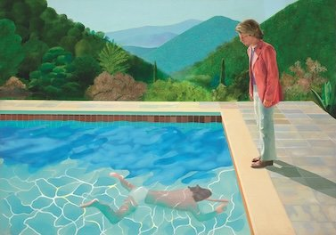

Portrait of an Artist (Pool with Two Figures)
David Hockney · 1972 · Acrylic on canvas · 213.5 × 305 cm · Private collection
In copyright. Look and learn: shown for study, not for download.
Hockney abandoned his first version after four months in late 1971 and started again. In April 1972 he photographed a swimmer in the pool at Tony Richardson's villa near Saint-Tropez, with his assistant Mo McDermott standing in for the man at the edge. Back in London he painted for two weeks in eighteen-hour days and varnished it the night before it shipped to New York for his show at André Emmerich. It sold that year for $18,000; in 2018 it fetched $90.3 million at Christie's, then an auction record for a living artist.